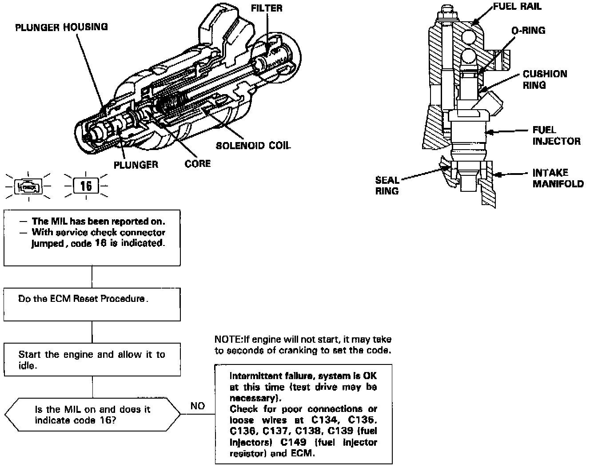
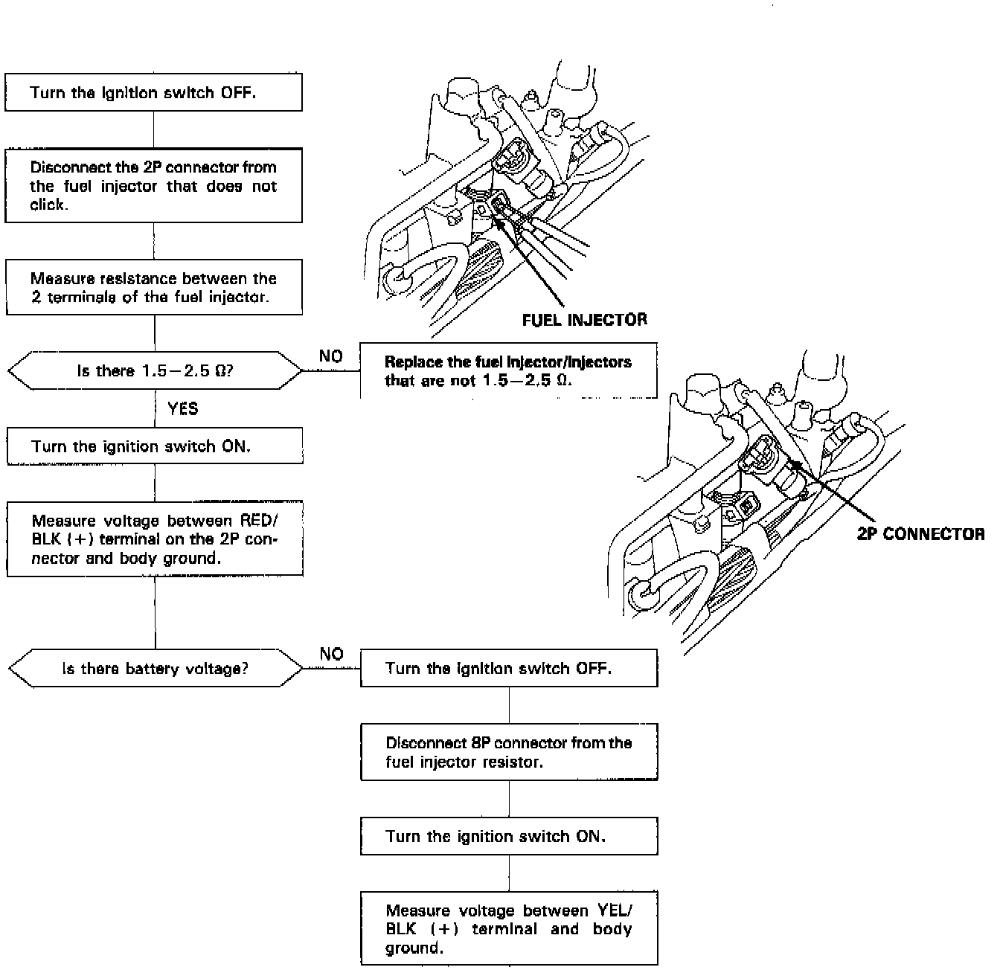
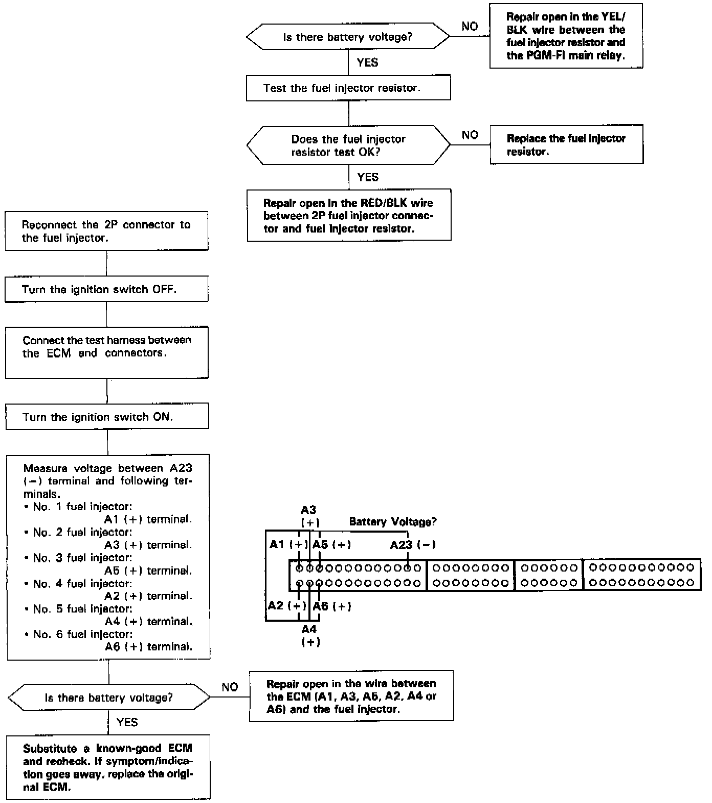

DTC 16
The Malfunction Indicator Lamp indicates Diagnostic Trouble Code) 16: A problem in the Fuel Injector circuit.


The fuel injectors are the solenoid-actuated constant-stroke pintle type consisting of a solenoid, plunger needle valve and housing. When current is applied to the solenoid coil, the valve lifts up and pressurized fuel is injected close to the intake valve. Because the needle valve lift and the fuel pressure are constant, the injection quantity is determined by the length of time that the valve is open (i.e., the duration the current is supplied to the solenoid coil). The fuel injector is sealed by an 0-ring and seal ring at the top and bottom. These seals also reduce operating noise.